本來是半開玩笑地以為自己會忙到天亮才有辦法睡覺，但是真的弄到早上六點才搞定全部的事情~_~
整理一整天拍的照片，絞盡腦汁寫出介紹的文字讓遊記不要太空洞，同時將英文版的遊記排版上線，這樣就去掉了四個小時。
騎單車旅行的遊記都沒有城市觀光的遊記來得難寫呀～
接著還要處理遊記國旗選單列的部分，一開始沒有這個選單列的設計，之後遊記天數越來越多，才加入了這個功能。
本來它看起來是像這個樣子，由左到右是會經過的國家順序。
因為路線修改的關係，不走烏克蘭改走白俄羅斯，本來只需要換一面國旗，三分鐘就能搞定的事情。
當這個選單列做完之後我怎麼看都覺得很奇怪，明明是台灣人舉辦的活動，為什麼沒有台灣的國旗？
這還用說～起點是北京，終點是巴黎，這趟旅行根本就沒有騎台灣呀。
話雖這麼說還是覺得有些地方不太對勁，誰規定我不能騎台灣，當下決定騎到巴黎回台灣之後，原車原裝備從下飛機開始接著環島一圈。
小多騎了這麼遠的路，經過九個國家，甘甜苦辣都嘗過了，讓他也親身體驗一下台灣的美麗風景和人情味。
加上台灣國旗之後這個選單列就變得很長，肯定會超出螢幕橫向的範圍，這樣網頁就必須要左右捲動，設計很爛，於是將相形累贅的國名變成動態顯示。
改完就變成這個樣子，多加上一面國旗，選單列反而變短了，也不會有國名顯示斷行的問題。
弄完這個就快要凌晨五點了，還有其它瑣碎的事情要處理，手錶的鬧鐘六點整嗶～嗶～響起，之前是叫我起床，現在是提醒該睡覺了。
熬夜一整晚好不容易可以睡覺，反而睡不著，生理時鐘亂糟糟的，睡醒的時候已經過了中午十二點，一天的一半就這麼過去了。
昨天沿著河畔騎車，一路騎到二戰紀念館，拍了很多莫斯科河的景色，今天換一條路線，打算兜莫斯科一小圈。
這一圈在地底下正好是環狀地鐵行駛的路線，在地面上則是一條環狀的道路，這個圈裡面就是最上乘的鬧區。
包含了紅場、克里姆寧宮、國家歷史博物館等，很多值得一看的景點都在這個範圍裡。
打定主意之後立即出發，從所在位置的南方先往北走，以逆時鐘的方向騎車，回到宿舍之後GPS的軌跡就是這樣：
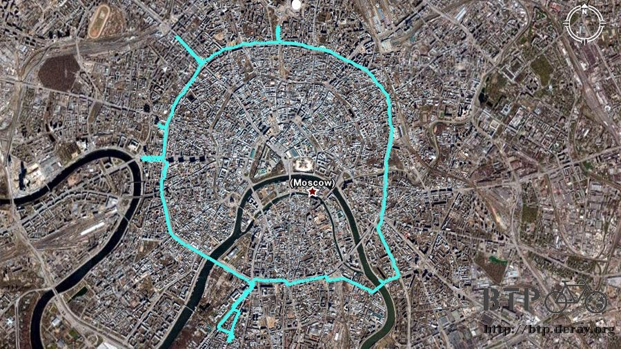
可惜右下角繞錯路，讓這個圈沒有圓的很漂亮，加上一些繞路的虛虛線條，看起來還真像變形蟲=..=
莫斯科河的照片已經拍太多了，有點膩，換個口味，今天都是城市街景，Let's GO～
當然拖鞋是一定不可少的，這幾天穿得好習慣，新買的鞋子連鞋帶都還沒綁上去，之後的路我應該會偷偷地穿拖鞋騎車。~_~
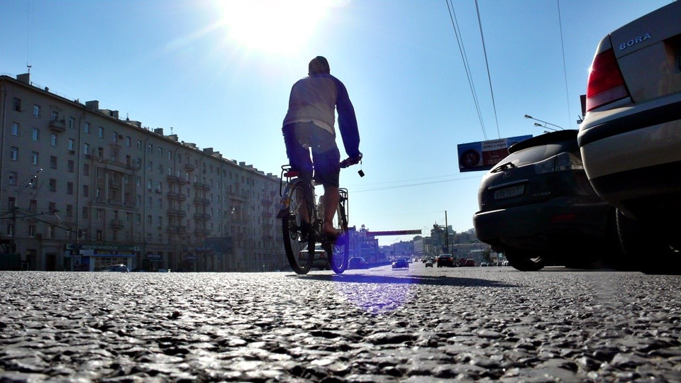
剛上路出發就看到這一幅巨大的廣告，日本人生意做得實在很大，莫斯科市區的廣告看板，大多都是日本廠商。
海報中就是日本導演兼演員『北野武』，電視裡是他的作品之一『玩偶』，這部片當我在哈薩克邊界等著進入俄羅斯的時候看過，深深被感動。
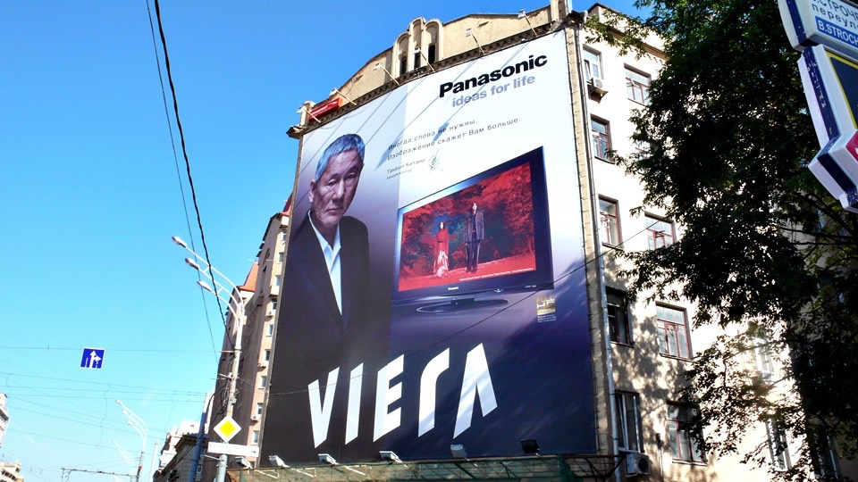
莫斯科的馬路抬頭往上看就是電車的電線，電車分兩種，行駛在鐵軌上的，跟自己有輪子會跑的。
有輪子會跑的電車比起在鐵軌上行駛的自由不到哪裡去，因為頭上牽著電線，只能在固定的兩個車道變換行駛，想過站不停也不行。
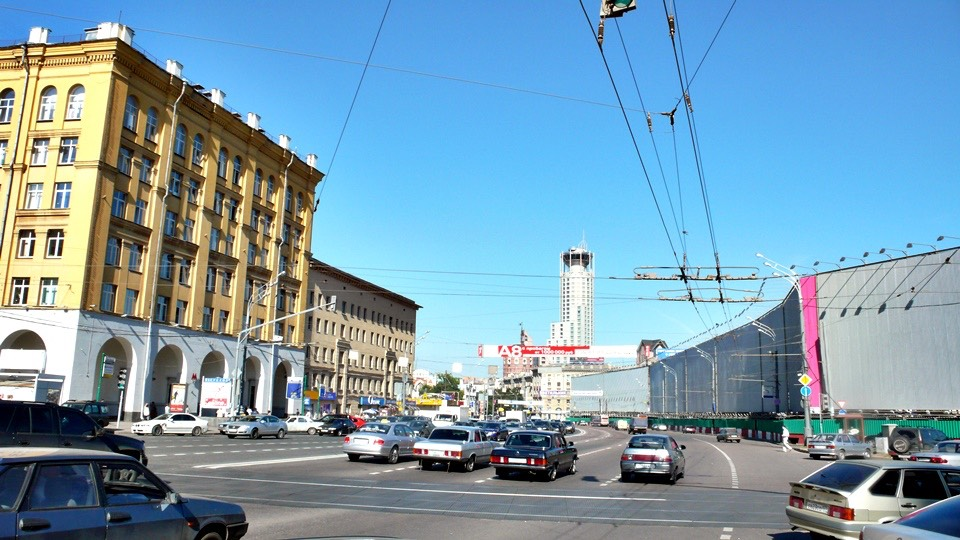
鐵軌會讓路面變得凹凸不平，同樣的路除了電車會行駛之外，汽車照樣也可以走，並不是電車專用道，看起來還挺有趣的。
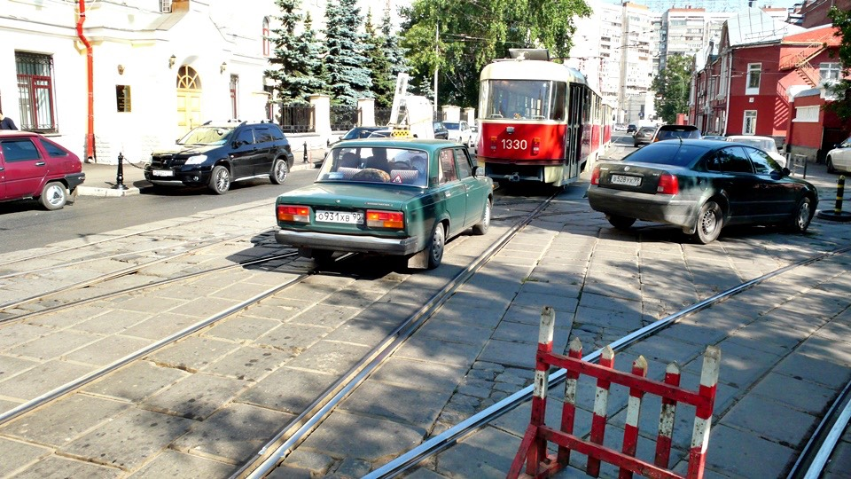
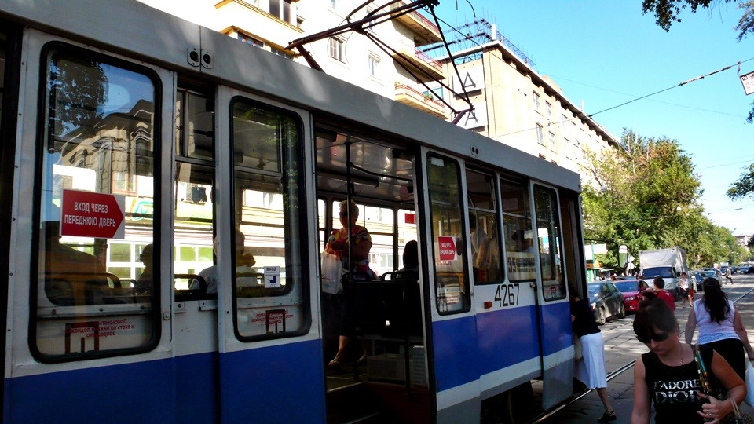
莫斯科人的生活彈性很高，路上跑的車是左右駕並存，但很少看到車禍，馬路很寬這一點讓市區要道的交通無比順暢。
看到旁邊人聲鼎沸，難得可以看到這麼多人聚集在一起，人潮不斷由地底冒出來，底下大概是地鐵站。
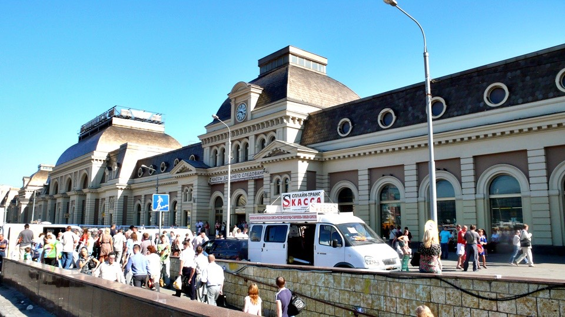
而外面則是火車站的樣子，標示沒有很清楚，不知道這一棟大建築是不是莫斯科車站？
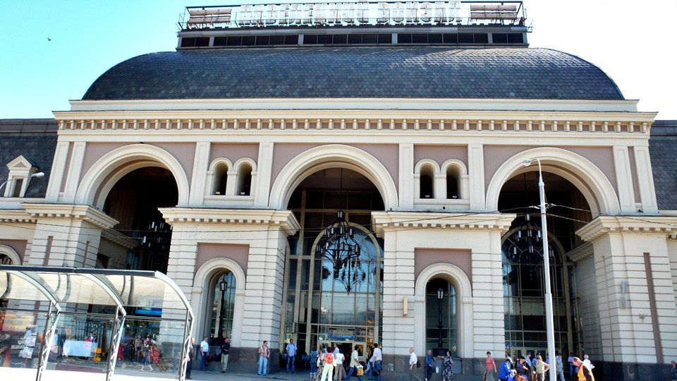
今天騎車繞圈的時候會過河兩次，第一次是在這邊，有個木製的藍色碼頭讓遊客上下船。
河岸邊總能看見富麗堂皇的建築物，可惜通通叫不出名字呀，現在很需要一本中文版的莫斯科觀光手冊，真希望能更仔細地了解這座城市。
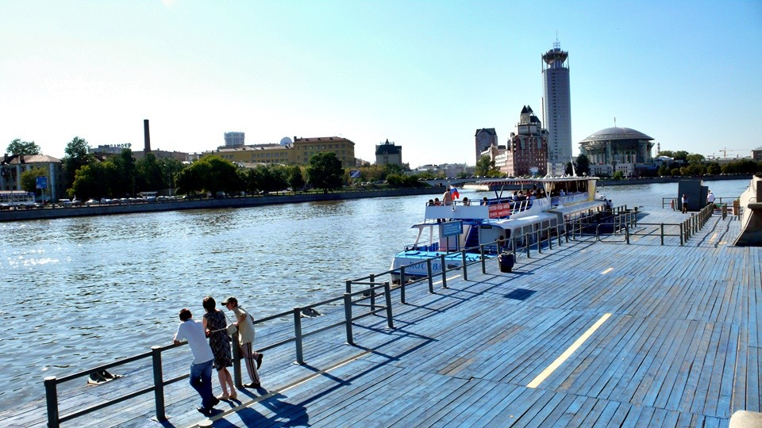
莫斯科並不是平的，起伏的地形讓它更具風味，騎車相當有玩性的感覺，像人生起伏波折總比平淡過日子來得有意思。
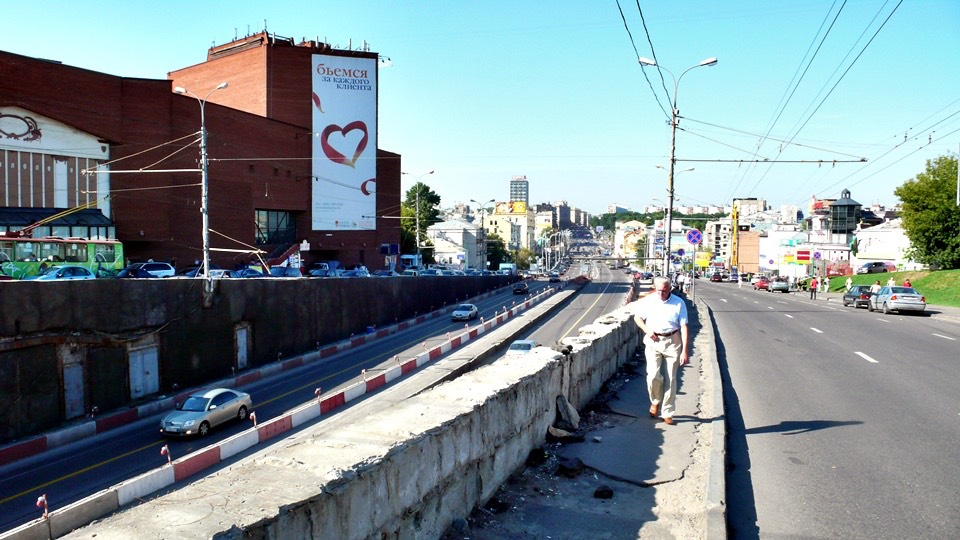
這條小小河，地圖上連看都看不到，大概是人工挖的渠道。
聽說城裡有一棟屋頂尖尖的就是莫斯科大學，今天看到很多都是屋頂尖尖的，究竟哪一棟才是呀？
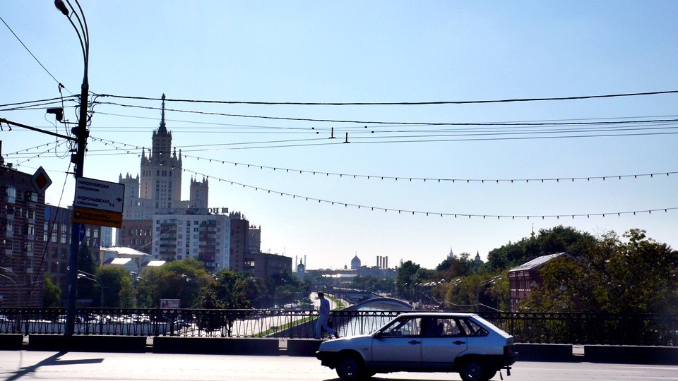
每天都只帶一壺水出門，然後看別人吃冰喝可樂，萬里無雲加上艷陽高照，怎麼才能涼快點呢？
『老闆～也給我來一個冰淇淋。』
一樣的杯子冰淇淋，這邊口味豐富很多，上面還可以灑一些核桃、花生，餅乾做的杯子裝了滿滿的冰淇淋，售價二十盧布。
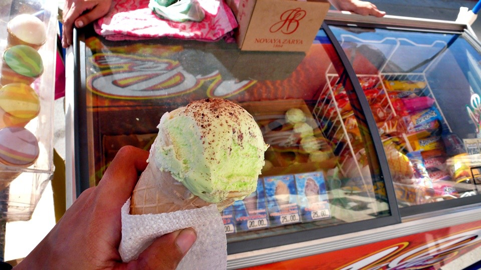
此時天底下若有什麼食物比這一個杯子冰淇淋更好吃的，那就是再來一個杯子冰淇淋。
在路上的時候大概就像這樣，行人並不會很多，連在紅場這麼熱門的景點都不會摩肩擦踵。
本來我都在柏油路上騎車，但車多的時候有點危險，人行道並沒有禁行單車，很多人在上面騎，為了安全就跟著走這裡。
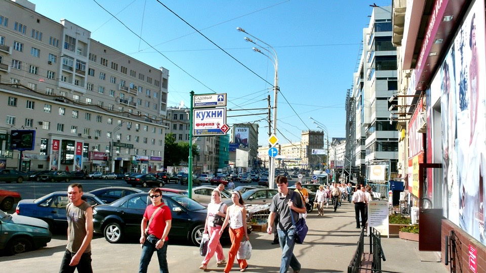
嚇！是白宮嗎？見到鬼了。翻著地圖也沒有介紹這是什麼地方，心中的疑惑越來越多。
按下快門的時候有點猶豫，因為之後我還得想辦法介紹這是什麼地方@@"
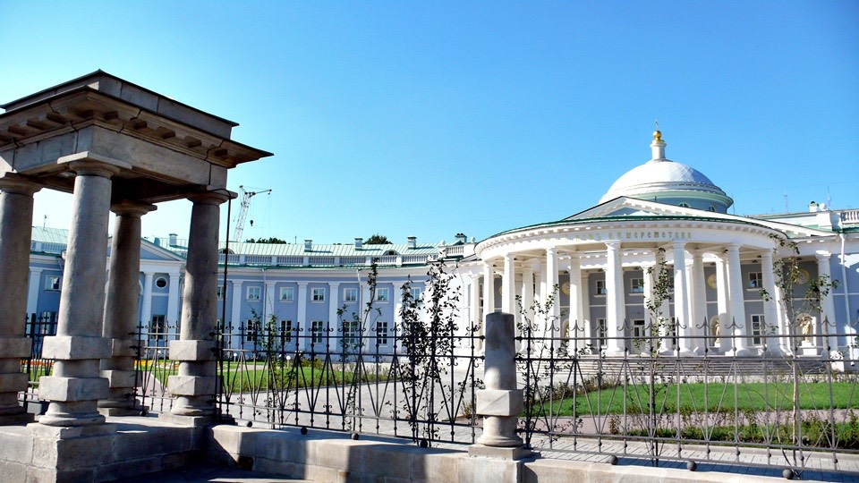
繞過小山丘爬上一座只有小路才能上來的紅色教堂，好寧靜的地方，到這邊的時候有一對新人在拍婚紗照。
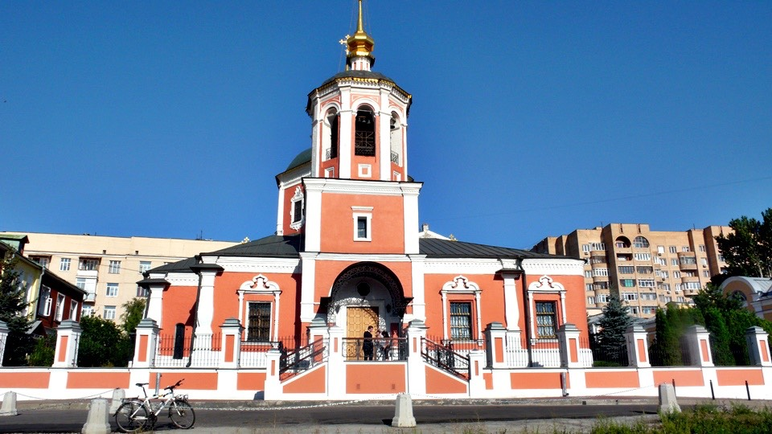
男的很帥、女的很美，郎才女貌看了就令人開心。
趁拍照的空檔走過去，拿出相機說能讓我拍張照片嗎？
這對新人還擺了俏皮的姿勢，男生看起來比較靦腆，娶到美嬌娘真是你的福氣呀。
女生的動作好像是在說：又還沒正式嫁給你，別以為我是你的人了，等娶過門再說。
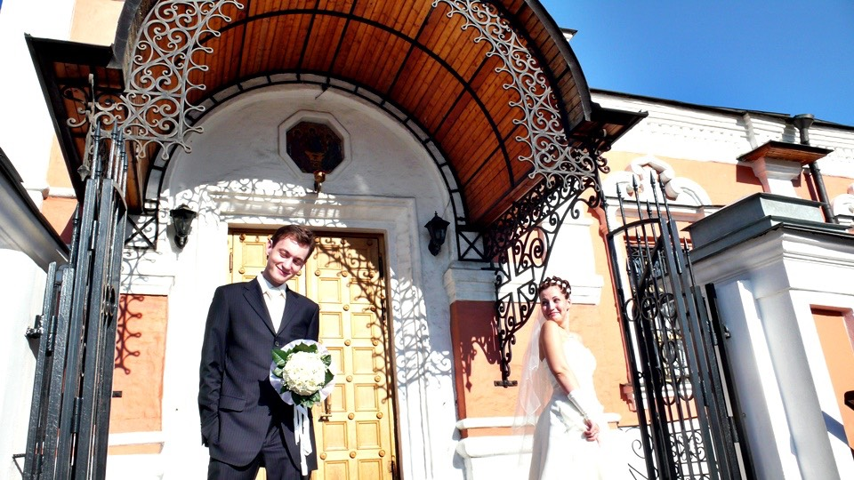
在莫斯科過得有點爽，還有五千公里要騎，在這邊休息的日子裡都快要覺得已經騎到終點，旅程結束了。
雖然剩下三分之一的路程，但還沒到巴黎之前變數都還很大，休息之餘也別太鬆懈，等騎到巴黎才算是到手呀。
這是鬧區某一間店面掛在牆壁上的怪東西，中央的太陽是一座時鐘。
圍繞著它的則是十二個形狀各異其趣的門輪流打開，現在是下午六點，輪到最底下那一個綠色玩偶出來站崗。
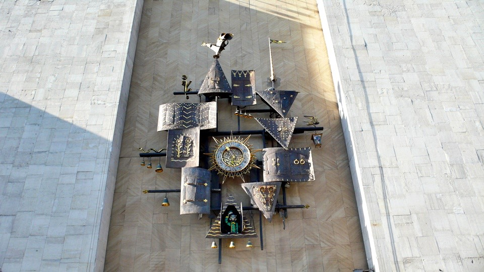
吃完冰淇淋之後肚子就開始餓了，路邊賣熱狗跟漢堡的攤販太吸引人了，拍照的時候正好走來一位前凸後翹的美女～
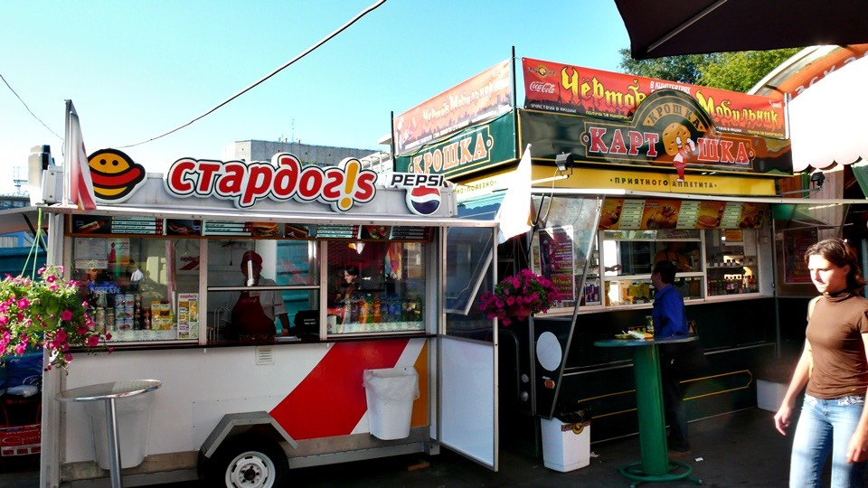
此時流口水是正常反應，美女是一回事，主因是肚子餓到爆炸，胃像無止盡的黑洞一樣渴望著食物。
看著有賣的香腸種類，有的比較胖還黑黑的，有的比較白還捲捲的像蚊香一樣，看起來很奇怪但是都好想吃看看。
等將來賺大錢之後我一定要跟老闆說：全部各給我來一份！
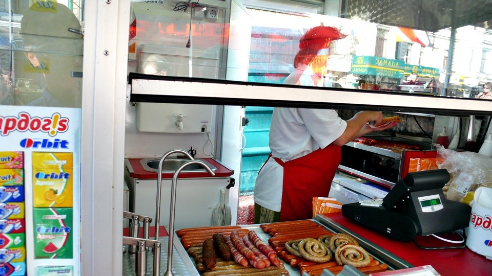
現在就先點包著培根的熱狗，夾在口感厚實的長方形麵包、切片的酸黃瓜、擠上美乃滋和番茄醬再灑一些酥酥脆脆的東西，完成！
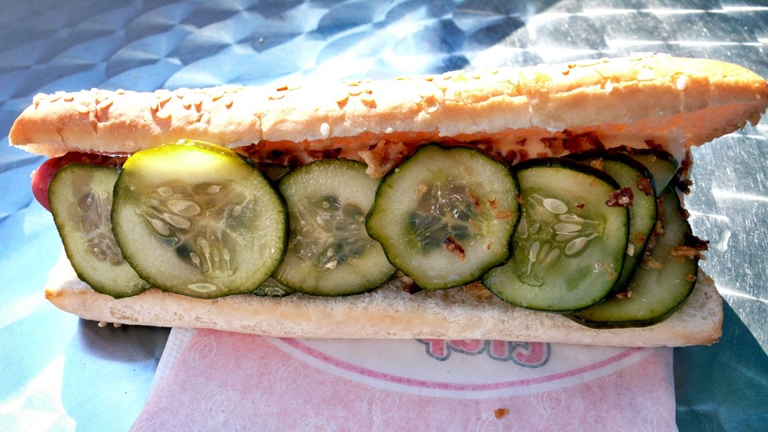
市井小民的食物很平價，這份熱狗只要五十九盧布，一點也不貴喔～
而且這個真的很好吃～美味到眼淚會流出來，一方面是被美食感動，另一方面是回台灣之後就只剩下大亨堡能吃了T_T
若這個世界上有什麼食物比它還好吃，唯有老闆～再來一份！
站著吃完美食，莫斯科人好像很少人會邊走邊吃東西，大家都會乖乖站在攤販前面吃光，垃圾丟進桶子裡才離開。
填飽肚子之後繼續進行繞圈計畫，這邊是超級熱鬧的市區。
看到這個銅像覺得好眼熟，回想起來外交部駐莫斯科的耿秘書和凱右就是帶我到這邊來吃日式料理，難怪價錢那麼驚人。
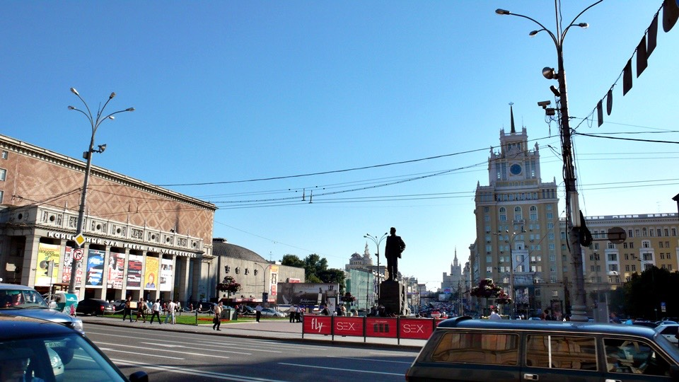
要繞一圈的話就必須過這條馬路，但沒有斑馬線和紅綠燈，車子川流不息，硬闖肯定會升天～
在這邊先右轉，順著大馬路走，等待空檔的時候再迴轉接回環狀道路上，一路上這麼繞了幾次路，就是GPS地圖上那些虛線的由來。
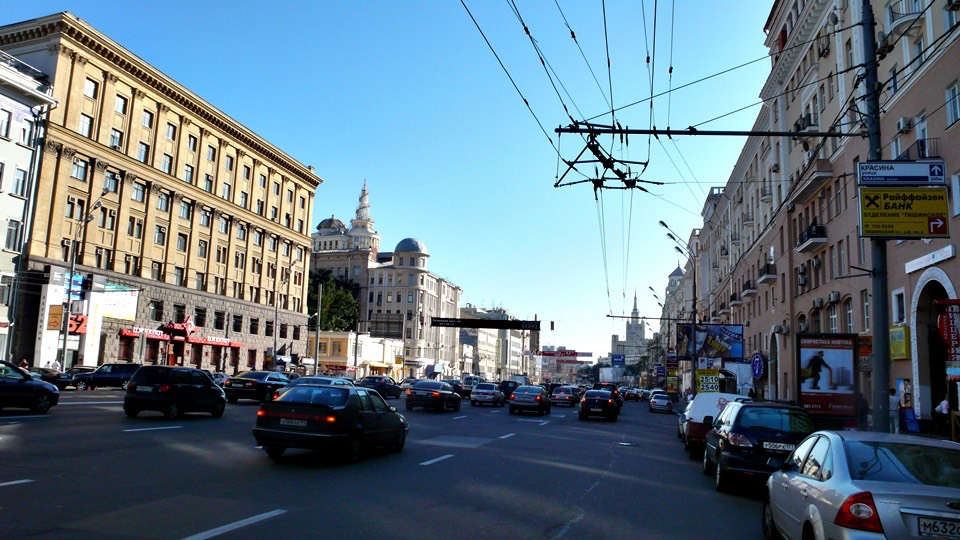
這一棟是莫斯科動物園，門口的設計很有趣，看起來一點也不像動物園。
簡單的俄文字母對照英文我還還看的懂，C->S、B->V、H>N、P>R，俄文字母的『3』就是英文的『Z』，所以『300』就是動物園(ZOO)啦。
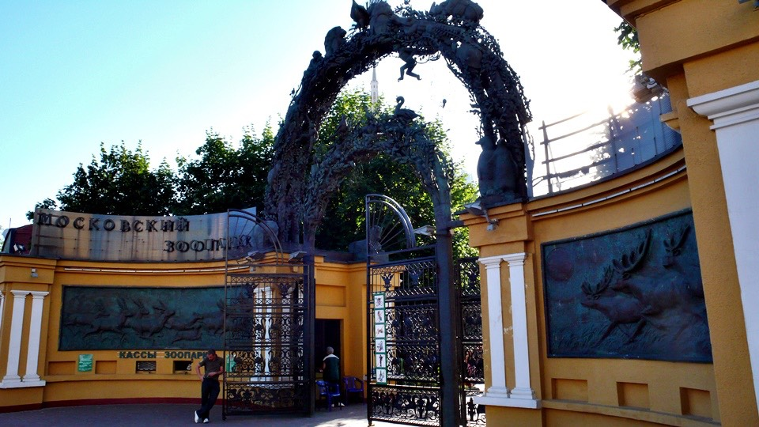
本來就沒打算進去參觀，但是門口的漫畫告示牌實在太好笑了XD
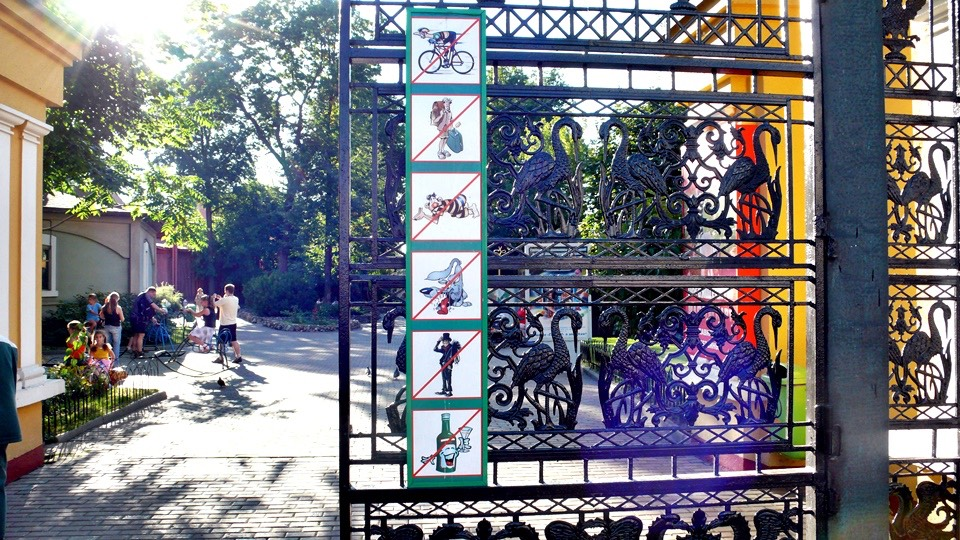
禁止在裡面騎單車競速、禁止攜帶大包小包入內、禁止在裡面乞討、瘋狗也不能進去、穿著一身黑衣的人也不能入內，很奇特的是居然連酒也禁止。
這也是一個莫斯科全市不禁菸的好範例，穿著黑衣服都禁止進入了，但裡面依然不禁菸。
又是一座尖尖的大建築物，這棟是莫斯科大學嗎？走在這邊的人看起來好像比較有氣質一點。
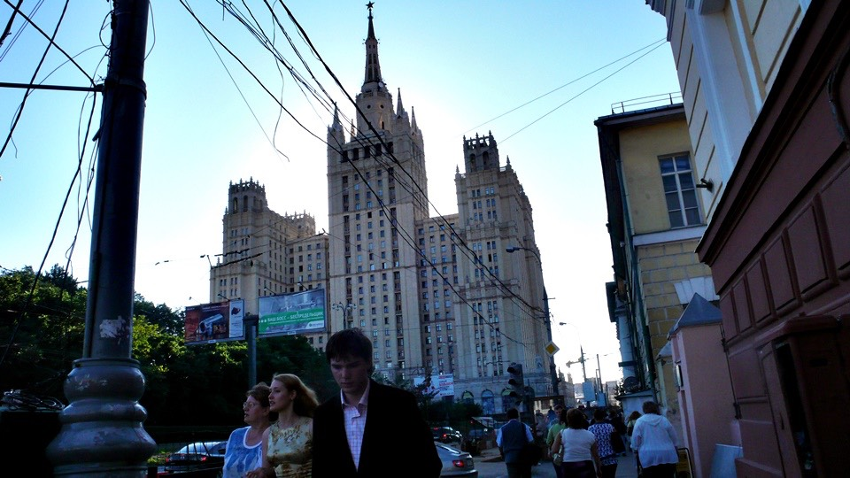
如果是一流學府那一定要參觀一下，這棟樓高約五十層，入口大門上方有四座雕像，都是大人和小孩的組合，寓意不明。
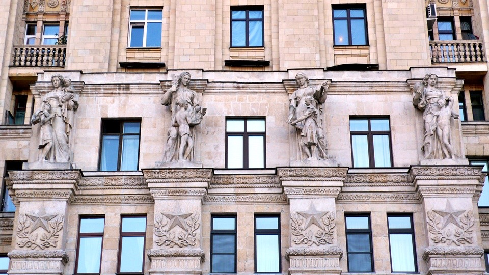
這條街是阿爾巴特街，同名的街道則是昨天去過的步行區，稱為舊阿爾巴特，新街看起來只有一個現代化能夠形容。
旋轉地球儀上的字母就是街名，好繁榮的都市呀，但我比較喜歡舊的阿爾巴特街，那邊可牽自行車散步，這裡連馬路都過不去，又得繞道而行。
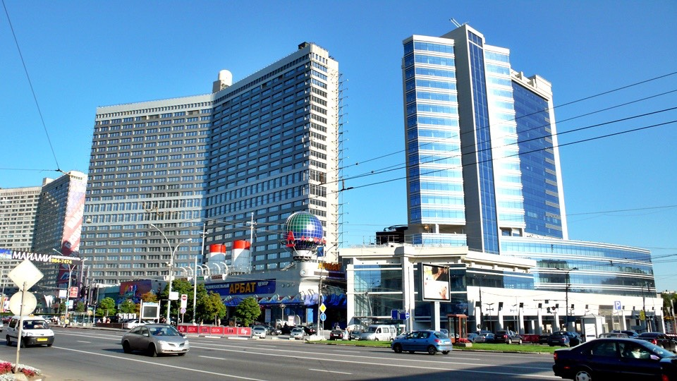
繞道騎車還是沒看到斑馬線，幸好有地下道能走，這邊也有兩根鐵軌的無障礙空間，推輪椅下去一定很恐怖，拿來牽小多剛剛好。
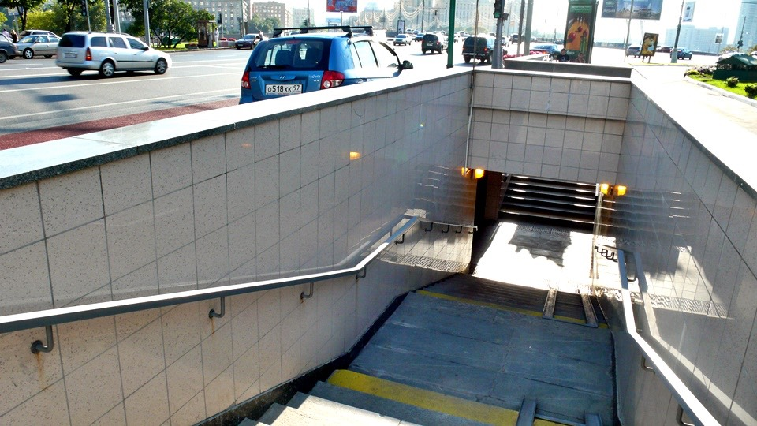
大概這是個地下道比較小，裡面沒有攤販或商家，明亮和整潔則令路過的人感到安心。
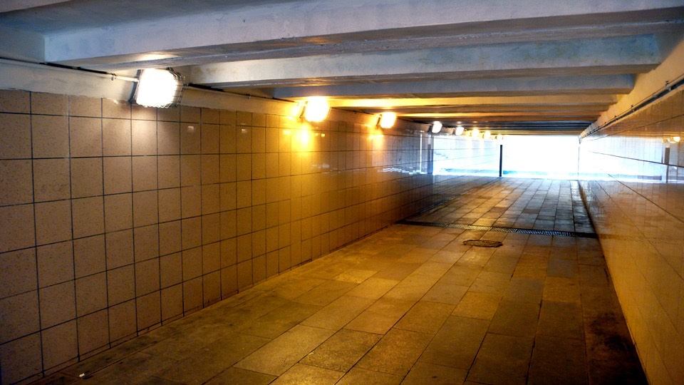
又看到這一棟建築物，就是那個掛著1951年但是不知道裡面是什麼的，每次看到它就代表快要回到宿舍了，這個圈子繞完了～開心
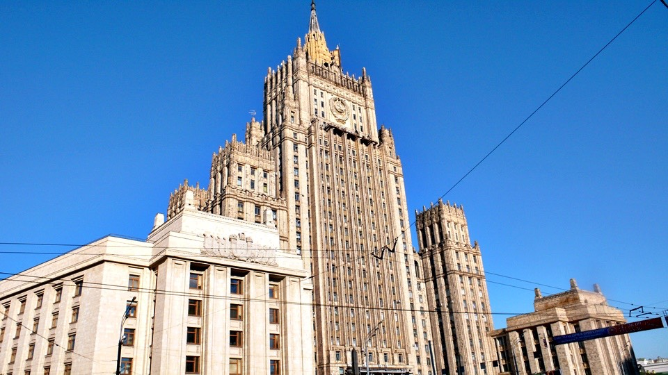
話說這一棟也是尖尖的大建築物，搞不好它才是莫斯科大學@@"
在大樓前面有兩個穿黃衣服的人舉著雙手，看到第一眼的時候直覺就是觀光客，和我一樣拿著相機拍照。
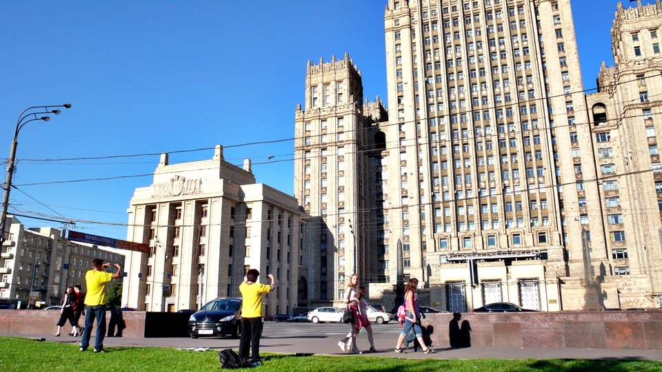
此時剛好路過一位粉紅色迷你裙辣妹，膝蓋以上三十公分呀！
離題了～其實高舉雙手的兩個人手裡並沒有拿相機，他們正對著大樓練法輪功。
今天繞圈的時候找到了賣相機的店家，裡面也有所需的記憶卡，詢價之後1G的SD記憶卡要價七百九十九盧布，大概台幣一千元。
還是台製的牌子，東西賣到俄羅斯來，連價錢都貴了三倍以上，雖然很貴但也不是買不起，只怕接下來記憶卡損毀在郊區，有錢也買不到。
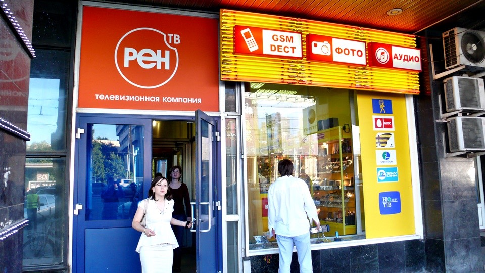
這是今天過橋的第二次，過了這邊就要回宿舍了～小妹妹很可愛，注意馬路如虎口喔
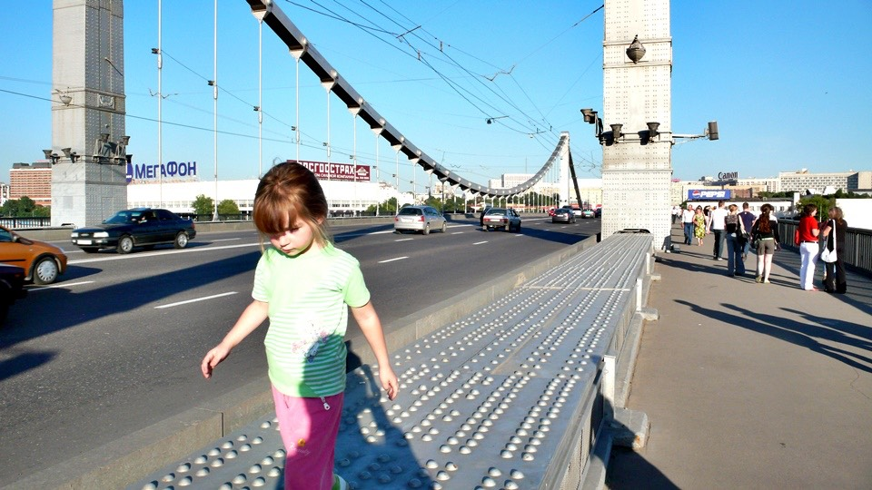
每次回宿舍之前都會在這個路口等紅綠燈，斑馬線是紅白相間，看起來比較危險一點。
這個路口的紅綠燈超難等，倒數計時的時間都跑完了，依然還是紅燈，車輛呼嘯而過，不知道什麼時候才會變綠燈。
大家等得不耐煩之後就聯合穿越兩邊加起來一共十六線道的大馬路，此時當然也是大無畏地跟著走。
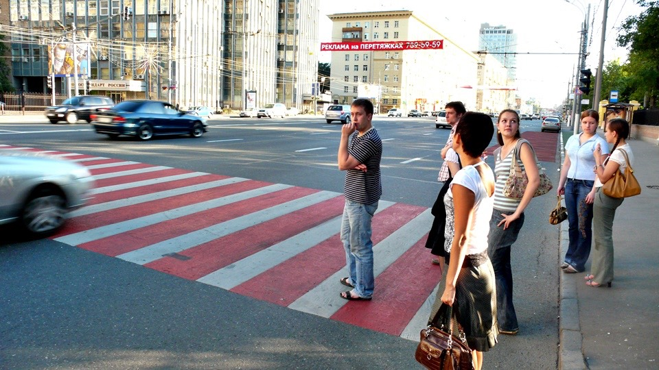
在市區騎車感覺很不錯，路上的駕駛很禮讓行人、包含騎單車的我，轉彎的車一定會禮讓我先行，在小巷子裡，車子也是跟在我後面開，不會亂鳴喇叭或硬繞過去。
宿舍裡能吃的東西已經沒了，之前買的蛋糕、泡麵、即溶咖啡、熱狗，所有的東西全部吃光。
昨天是用廚房裡的材料煮出晚餐，今天一定要補充新的糧食才行，還有六、日兩天要待在莫斯科，總不能餓死在這邊。
看到麵包攤販的時候超開心的，指著櫥窗裡的美味麵包跟店員說我要買這個。
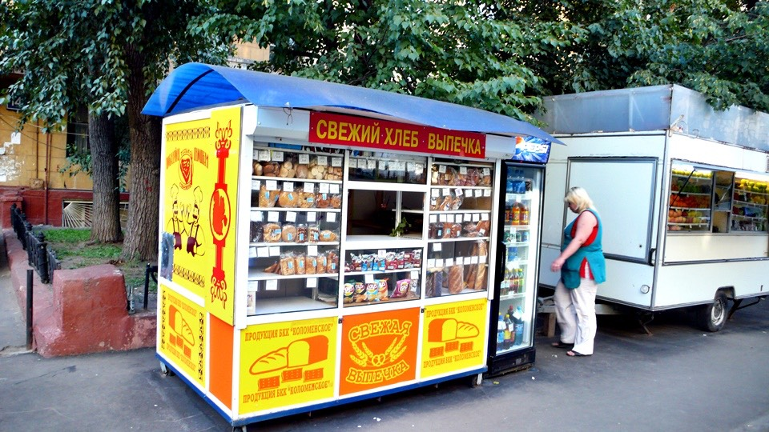
她只冷冷地跟我說『賣完了～沒了～明天請早～』然後就開始關門。
真是見到鬼，明明櫥窗裡面就是ㄧ大堆的麵包，當我是瞎子跟我說賣完了，睜眼說瞎話，到底是妳瞎還是我瞎？
哇哩咧完全被打敗，大概下班時間到了，不想做我生意。
沒關係，找別的地方添購糧食，Shufei之前跟我說宿舍前面五十公尺的地方就有商店，可是找了幾次都只看到鎖著的門。
很低調的商店，招牌也不是熟悉的寫法，外觀也不像商店，今天比較早來還在營業中，宿舍位於學區，學生很多，只是看起來有點蒼老。
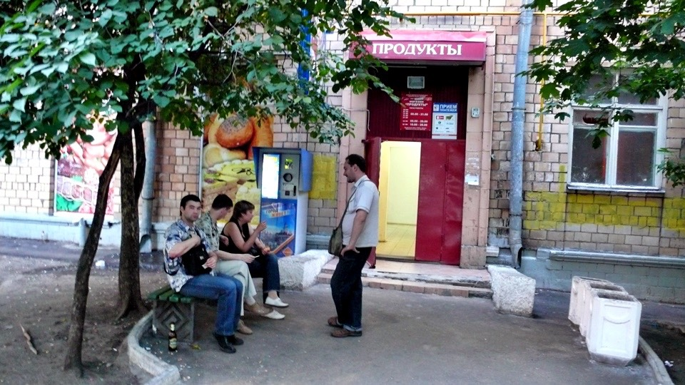
探頭進去看的確是商店，而且很大一間，販賣的東西應有盡有，手指頭比這個比那個，開心地進行大採購。
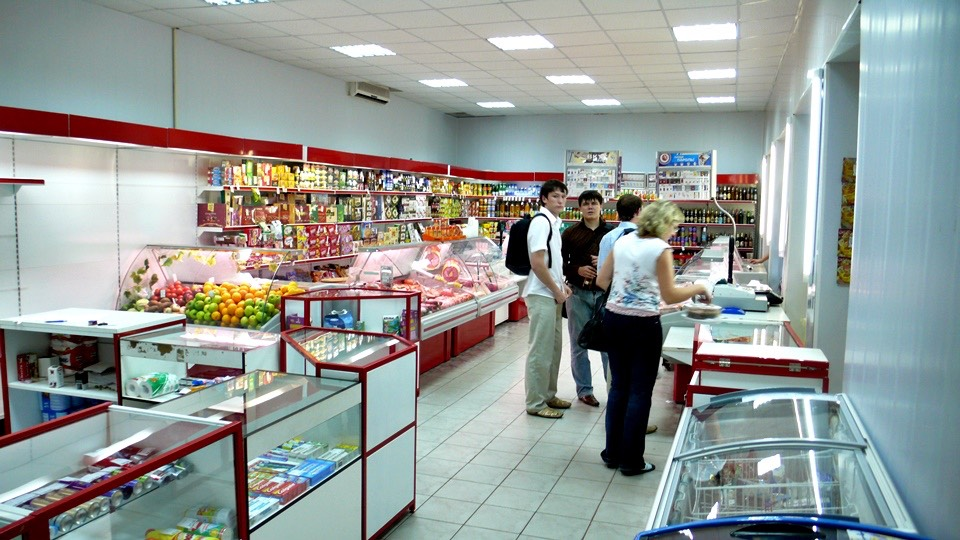
光是飲料類就買很多，共計買了兩盒兩公升裝的柳丁汁和綜合果汁、一大瓶可樂，希望是牛奶而不是優酪乳的也買了一大盒。
食物類有兩隻冰淇淋甜筒、一大條麵包、一塊看起來很好吃的臘肉、一包冷凍水餃、六包泡麵，一手騎車一手提全部的東西，重到手要斷掉。
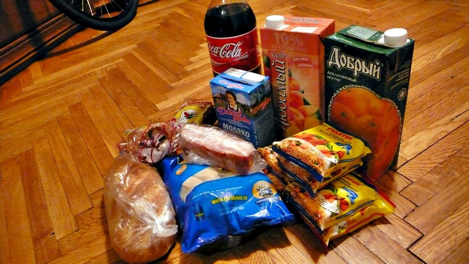
調味料廚房都有，住這邊開伙很容易，依靠這些食物要活兩天就不是難事，六日兩天繼續玩莫斯科！
預告一下，明天是博物館的參觀之旅～希望裡面禁止拍照，這樣我就可以少寫很多的介紹文字，乾脆忘記帶相機出門好了 ~_~
繼續閱讀：8.11 搭地鐵大冒險
俄羅斯-盧布－ 1：1.3 台幣
8.10
總計：517元
蘋果口味冰淇淋20元、培根熱狗59元、商店大採購柳橙汁、綜合果汁、牛奶、可樂、麵包、冰淇淋、泡麵、水餃438元